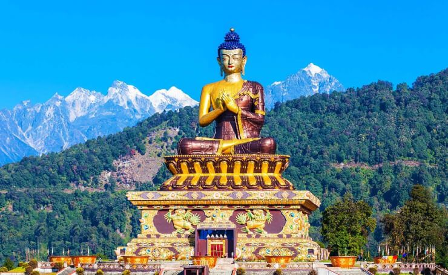
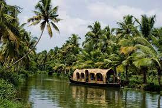

The Taj Mahal (/ˌtɑːdʒ məˈhɑːl, ˌtɑːʒ-/;[4] lit. 'Crown of the Palace', [taːdʒ ˈmɛːɦ(ə)l]),[5] is an ivory-white marble mausoleum on the southern bank of the river Yamuna in the Indian city of Agra. It was commissioned in 1632 by the Mughal emperor Shah Jahan (reigned from 1628 to 1658) to house the tomb of his favourite wife, Mumtaz Mahal; it also houses the tomb of Shah Jahan himself. The tomb is the centrepiece of a 17-hectare (42-acre) complex, which includes a mosque and a guest house, and is set in formal gardens bounded on three sides by a crenellated wall.
2.Buddha

The Buddha was born into an aristocratic family in the Shakya clan but eventually renounced lay life. According to Buddhist tradition, after several years of mendicancy, meditation, and asceticism, he awakened to understand the mechanism which keeps people trapped in the cycle of rebirth. The Buddha then traveled throughout the Ganges plain teaching and building a religious community. The Buddha taught a middle way between sensual indulgence and the severe asceticism found in the Indian śramaṇa movement.[10] He taught a training of the mind that included ethical training, self-restraint, and meditative practices such as jhana and mindfulness. The Buddha also critiqued the practices of Brahmin priests, such as animal sacrifice and the caste system.
3.Golden Temple
The gurdwara is built around a man-made pool (sarovar) that was completed by the fourth Sikh Guru, Guru Ram Das, in 1577.[5][6] Guru Arjan, the fifth Guru of Sikhism, requested Sai Mir Mian Mohammed, a Muslim Pir of Lahore, to lay its foundation stone in 1589.[7] In 1604, Guru Arjan placed a copy of the Adi Granth in Harmandir Sahib.[2][8] The Gurdwara was repeatedly rebuilt by the Sikhs after it became a target of persecution and was destroyed several times by the Mughal and invading Afghan armies.[2][4][9] Maharaja Ranjit Singh, after founding the Sikh Empire, rebuilt it in marble and copper in 1809, and overlaid the sanctum with Gold foil in 1830. This has led to the name the Golden Temple.[10][11][12]
4.Kerala

Kerala, a state on India's tropical Malabar Coast, has nearly 600km of Arabian Sea shoreline. It's known for its palm-lined beaches and backwaters, a network of canals. Inland are the Western Ghats, mountains whose slopes support tea, coffee and spice plantations as well as wildlife. National parks like Eravikulam and Periyar, plus Wayanad and other sanctuaries, are home to elephants, langur
5.Delhi
Delhi, is a city and a union territory of India containing New Delhi, the capital of India.[16][17] It is bordered by the state of Haryana on three sides and by Uttar Pradesh to the east. The NCT covers an area of 1,484 square kilometres (573 sq mi).[5] According to the 2011 census, Delhi's city proper population was over 11 million,[6] the second-highest in India after Mumbai,[18] while the whole NCT's population was about 16.8 million.[7] Delhi's urban area is now considered to extend beyond the NCT boundaries, and include the neighbouring satellite cities of Ghaziabad, Faridabad, Gurgaon and Noida in an area called the National Capital Region (NCR) and had an estimated 2016 population of over 26 million people, making it the world's second-largest urban area according to the United